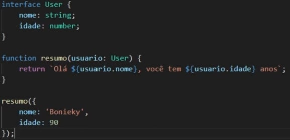

TypeScript
O que é o TypeScript ?
Typescript é uma linguagem de programação feita pela Microsoft, porém ela é código aberto. É uma linguagem feita 100% baseada no Javascript. O typescript não funciona no navegador, ele sempre precisará ser convertido para javascript para funcionar. O TypeScript ão veio para substituir o JavaScript ou para fazer outra coisa que o javascript não faça. Tudo que fazemos com o TypeScript também é possível fazer com o JavaScript. Mas então porque usa-lo ?
O TypeScript veio como uma forma de você criar um código melhor. Com o TypeScript é possível prever erros que podem vir a acontecer no futuro. É um código mais seguro, um código que voce sabe qual será o resultado final, um código livre de pequenos errinhos. É um código Tipado. Aqui iremos definir tipos para variáveis, funções etc. Talvez em um primeiro momento se torne algo mais "trabalhoso", "complicado", porém com o tempo você verá que ele irá assegurar o código e até mesmo facilitar quando o código ficar "maior".
TypeScript é um JavaScript "tipado"
Instalando o TypeScript
Para instalarmos o TypeScript podemos acessar o próprio site do TS e lá conferirmos as alternativas de instalação, pois podemos instalar o TS apenas no projeto, o TS globalmente (Instalará no computador e funcionará em qualquer projeto). Para instalarmos o TypeScript é necessário que o node esteja instalado, para que possamos instalar o typescript via NPM com o comando: npm install -g typescript
Regra 01: Dentro do HTML voce nunca importa um arquivo TS. Voce importa ele JS e depois via comando ele é convertido.
Regra 02: Entrar dentro da pasta do projeto (terminal do VSCODE) e digitar o comando do TS: tsc nomeDoArquivo.ts. Logo em seguida ele irá gerar um arquivo JS, e irá "funcionar".
Mesmo que haja error dentro do arquivo TS, ele irá converter para html. Por boas práticas é necessário evitar isso. Comando: tsc nomedoprojeto.ts --noEmitOnError. Dessa forma o arquivo JS não será gerado caso exista erros na aplicação.
Types Primitivos.
Aqui começamos a realmente entrar dentro do universo typescript e suas principais typagens. As typagens primitivas são basicamente três. No JS quando queremos criar uma VARIAVEL, colocamos:
- let/const/var nome = 'Guilherme'
Já no typescript precisamos typar o que ela está eseprando, ex:
- let nome: string = 'Guilherme'
- let idade: number = 30
- let trueOrFalse: boolean = true
Quando trabalhamos com TS o editor é o seu melhor amigo, pois ao você typar uma variável com number, ele irá acusar o erro caso você atribua a seu valor uma string.
Types em Arrays
Para tiparmos um array é basicametne igual ao superior, porém tipamos com chaves. exemplo
- let listaFrutas: string[] = ['pera', 'maca', 'melancia']
- const sequenciaNumeros: number[] = [2, 4 , 5 , 6]
O type Any:
O type ANY é um processo que funciona apenas no TypeScript. Ele é desconsiderado quando geramos o arquivo JS. Ele é basicamente o último recurso, ou seja, quando nao dá mais para fazer de outra forma.
Em um exemplo prático, quando temos um array de string e por algum motivo queremos dar um PUSH em um number nesse mesmo array, o que fazer? É ai que entra o type ANY.
- let lista : any = ['marcos', 'joao', 442]
Em outras palavras, ela basicamente diz: Typescript, pode ignorar a tipagem dessa variável.
Types em Funções
Ao falarmos de funções precisamos abrir os olhos em seus parâmetros e também em seu retorno.
Nos Parâmetros typamos normalmente dentro dos parâmetros.
- function allName(name: string, lastName: string){}
Já para typar o retorno de uma função, colocamos entre o parametro e o corpo dela:
- function allName(name: string, lastName: string): string{}
Dessa forma a função estará completamente typada.
Contexting Types
Muitas vezes o próprio TS apenas de olhar o que está acontecendo ele será capaz de deduzir o type quando ele for "óbvio". Em resumo, o typescript possui a sua inteligência. É importante entender o porque o typescript se comporta dessa forma.
Type em Objects
Aqui aprendemos um dos types mais utilizados dentro do universo da programação. Vamos começar falando de objetos sendo passados para dentro de funções. Quando passamos objetos por parâmetros para dentro de funções, podemos typar as propriedades desejadas dentro desse objeto. Exemplo:
- function falaNome (usuario: {nome: string , idade:number})
Vale a pena ressaltar que podemos informar também que podemos enviar propriedades opcionais ( que podem ou não ser enviada) e para isso colocamos o ?. Exemplo:
- function falaNome (usuario: {nome ?: string , idade ?:number})
Múltiplos Tipos
Em alguns casos em específico podemos nos deparar com a situação de uma variável poder vir a receber mais de um tipo de type. Para isso utilizamos o operador |. Ex:
- const idade: string | number = 90
Dessa forma estamos informando ao TypeScript que a idade pode vir a ser uma string ou pode vir a ser um number(Union Types).
Caso tenhamos uma função que recebe uma variável idade como o exemplo acima, e dentro dessa função executemos algum método específico de um dos possíveis types, é necessário verificar o type antes com if/else. Exemplo: Se passamos uma variável typada como number | string, com o valor de string, para executarmos um toUpperCase por exemplo, será necessário verificarmos if( typeof string).... pois senão o typescript irá acusar erro pois não é possível usar toUpperCase em variáveis do tipo Number.
Criando Types
Geralmente quando criamos type próprios utilizamos o padrão chamado PascalCase, e para criarmos funciona basicamente igual uma variável, exemplo:
- type NomeCompleto = string
Dessa forma já podemos utilizar nosso type desta forma :
- let nome: NomeCompleto = 'Guilherme'
Geralmente utilizamos types próprios em duas situações: Quando queremos simplificar e organizar melhor nosso código, geralmente quando estamos trabalhando com objetos e o segundo motivo é quando o type é replicável em outras partes do nosso código. Dentre elas , utilizamos mais quando falamos de objeto.
Muitas vezes ao typarmos os parâmetros necessários de um objeto igual feito acima, fica extremamente cansativo e de forma não legível, pois no exemplo acima temos apenas dois parâmetros, porém e quando formos passar 10, 15 parâmetros ?
Quando isso acontecer, podemos criar o type do próprio objeto facilitando a legibilidade e futuras manutenções.
Para criar esses próprios types podemos utilizar tanto via type quanto via interfaces, porém a sintaxe é praticamente a mesma. A diferença é que com type nao podemos realizar alterações e no interface permite alterações. (Aula - $$$ ). Geralmente será utilizado o type.
Type Assertions
Em outras palavras é quando ajudamos o typescript a ser um pouco mais específico. Por exemplo, ao selecionarmos um input que é um objeto HTML (document.getElementByID('id')), ela irá retornar um objeto chamado HTMLElement que é um elemento geral do HTML( Div, botao, input, qualquer coisa). Porém quando tentamos acessar o value do input, ele irá dar um erro. E porque isso acontece? Acontece pois nem todos esses caras (HTMLElements) terão uma propriedade value. Uma div por exemplo não possui, já um input possui. Em geral, precisamos ajudar o type script a saber que este input que estamos pegando é de fato um input.
- let idade = document.getElementById('ID') as HTMLInputElement
Todo elemento é um HTMLElement, porém dentro do HTMLElement possuimos alguns tipos diferentes com propriedades diferentes.